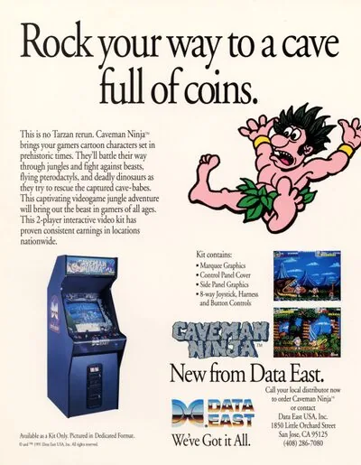

FBA (FinalBurn Alpha)
Caveman Ninja
- Año: 1991
- Desarrollador: Data East Corporation
- Género: Plataformas / Disparos con desplazamiento
- Jugadores: 2 jugadores
Caveman Ninja es un beat 'em up de plataformas con desplazamiento horizontal, ambientado en la prehistoria, en el que uno o dos jugadores encarnan a los cavernícolas Joe y Mac. Una tribu rival ha invadido su poblado y se ha llevado a todas sus mujeres, y los dos héroes tienen que ir a rescatarlas.
Joe y Mac deben superar numerosas fases prehistóricas luchando contra cavernícolas enemigos y dinosaurios. Al principio van armados con hachas arrojadizas, que pueden lanzar en vertical o en horizontal describiendo un arco corto. Manteniendo pulsado el botón de ataque lanzan armas más grandes y potentes. Cuando tienen un enemigo cerca, lo golpean con un garrote de madera. También pueden saltar mucho más alto pulsando ARRIBA y SALTAR.
Joe y Mac tienen una barra de vida que se va gastando con el tiempo, y que baja más cuando les golpea un enemigo o un proyectil. Los enemigos derrotados sueltan comida que la recupera. Por las fases se encuentran distintas armas, como ruedas de piedra, bolas de fuego y dobles sombríos que cargan hacia delante y atacan a los enemigos. Otras mejoras son la salsa picante o los jalapeños, que dan invencibilidad temporal y aliento de fuego.
Algunos ataques enemigos, como que te alcance una roca lanzada, dejan a Joe y Mac aplastados como una tortita unos segundos; en ese estado pueden moverse y atacar, aunque más despacio. Jugando dos a la vez, los personajes pueden hacerse daño entre ellos. Tras cada jefe se puede elegir entre distintas rutas, y después de derrotar al jefe final se elige entre tres salidas, cada una con un final ligeramente distinto.
Controles
Dos botones.
| Panel | Juego |
|---|---|
 | Atacar (mantener pulsado: hacha más grande) |
 | Saltar |
 | Moneda |
  | Empezar |
+  | Salir del juego |
El panel en FBA (FinalBurn Alpha)

Longplay

Partida completa de la recreativa (22 min), de World-of-Longplays: Arcade Longplay [299] Caveman Ninja.